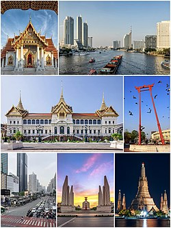

|
ประวัติ กรุงเทพมหานคร
ในสมัยกรุงศรีอยุธยานั่น กรุงเทพฯ ยังเป็นเพียงเมืองการค้าขนาดเล็ก อยู่ที่ปากแม่น้ำเจ้าพระยา แต่ต่อมาหลังจากการสถาปนาเมืองหลวงใหม่ ทำให้กรุงเทพฯ เป็นที่ตั้งของ 2 เมืองหลวงที่สำคัญก็คือ กรุงธนบุรี และ กรุงรัตนโกสินทร์ ค่ะ ทำให้กรุงเทพฯ เติบโต และกลายเป็นหัวใจสำคัญของประเทศ หลังสิ้นรัชสมัยของ สมเด็จพระเจ้าตากสิน หรือ พระเจ้ากรุงธนบุรี ได้มีการสถาปนา กรุงรัตนโกสินทร์ ขึ้นเป็น เมืองหลวงของประเทศไทย ในวันที่ 21 เมษายน พ.ศ.2325 ในรัชสมัยของ พระบาทสมเด็จพระพุทธยอดฟ้าจุฬาโลก ซึ่งปราบดาภิเษกเป็นปฐมกษัตริย์แห่งราชวงศ์จักรี เนื่องจาก กรุงธนบุรี เมืองหลวงเดิม มีความคับแคบ และไม่ต้องด้วยหลักพิชัยสงคราม ทำให้ กรุงเทพมหานคร กลายเป็นเมืองหลวงมาจนถึงปัจจุบัน และเมื่อวันที่ 21 ธันวาคม พ.ศ.2514 รัฐบาลจอมพลถนอม กิตติขจร ได้รวม จังหวัดพระนคร และ จังหวัดธนบุรี เข้าด้วยกันเป็น นครหลวงกรุงเทพธนบุรี และภายหลังการปรับปรุงการปกครองเมื่อวันที่ 14 ธันวาคม พ.ศ.2515 จึงได้เปลี่ยนเป็นชื่อเป็น กรุงเทพมหานคร อีกทั้งในปัจจุบัน กรุงเทพมหานคร เป็นเขตปกครองพิเศษของประเทศไทย ไม่ได้มีสถานะเป็นจังหวัดเป็นจังหวัดอื่นๆ กรุงเทพมหานคร มีการเลือกตั้งผู้บริหารท้องถิ่นโดยตรง |
 |
กรุงเทพมหานครจากภาพถ่ายดาวเทียม
กรุงเทพมหานครมีอาณาเขตทางบกติดต่อกับจังหวัดสมุทรสาคร จังหวัดนครปฐม [[จังหวัดนนทบุรี]] จังหวัดปทุมธานี จังหวัดฉะเชิงเทรา และจังหวัดสมุทรปราการ ส่วนอาณาเขตทางทะเลอ่าวไทยตอนใน ติดต่อจังหวัดเพชรบุรี จังหวัดสมุทรสาคร จังหวัดสมุทรปราการ และจังหวัดชลบุรี โดยมีรายละเอียดดังนี้ |

|
กรุงเทพมหานครเป็นองค์กรปกครองส่วนท้องถิ่นรูปแบบพิเศษของประเทศไทย มิได้มีสถานะเป็นจังหวัด คำว่า "กรุงเทพมหานคร" นั้นยังใช้เรียกองค์กรปกครองส่วนท้องถิ่นของกรุงเทพมหานครอีกด้วย มีโครงสร้างประกอบด้วยสภากรุงเทพมหานครและผู้ว่าราชการกรุงเทพมหานคร กรุงเทพมหานครมีการเลือกตั้งผู้บริหารท้องถิ่นโดยตรง |